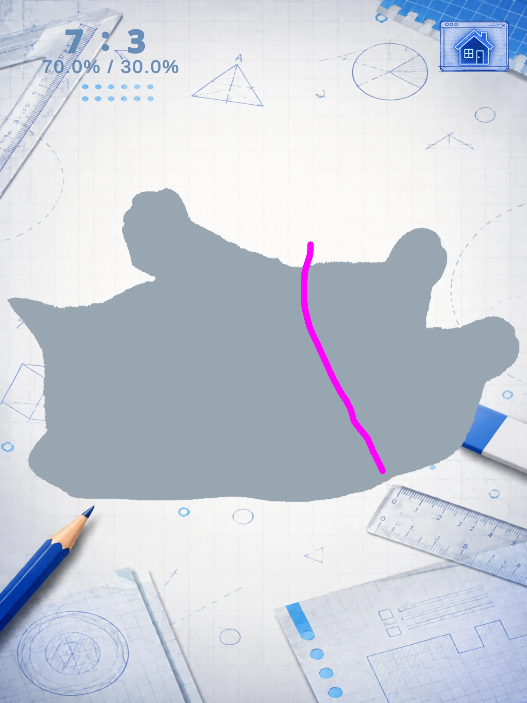
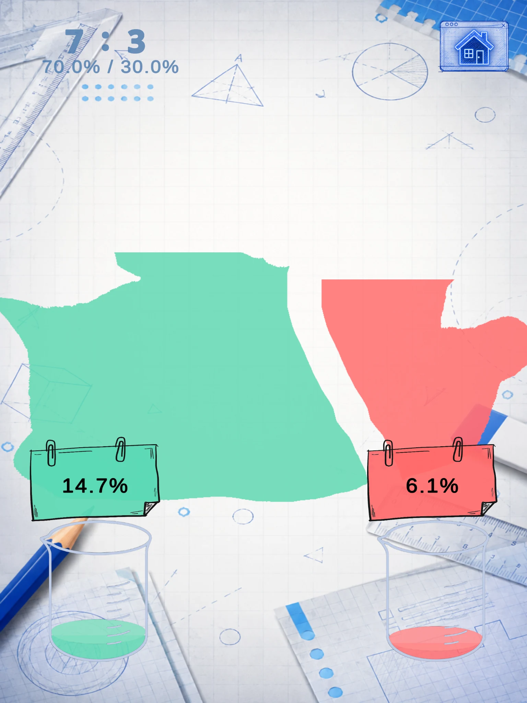
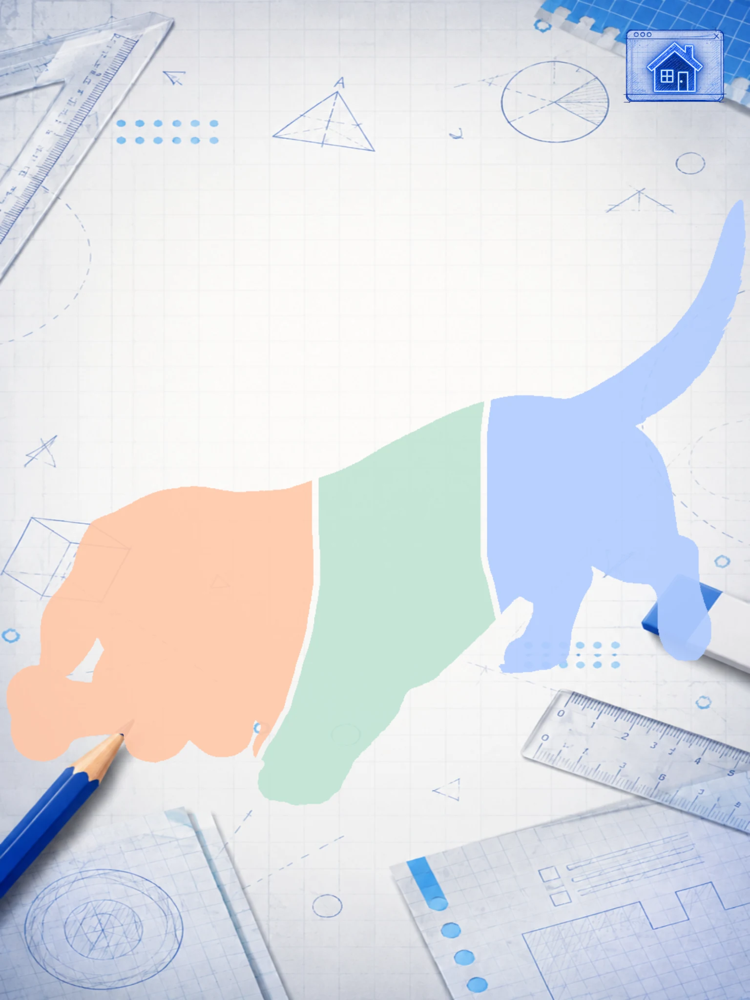
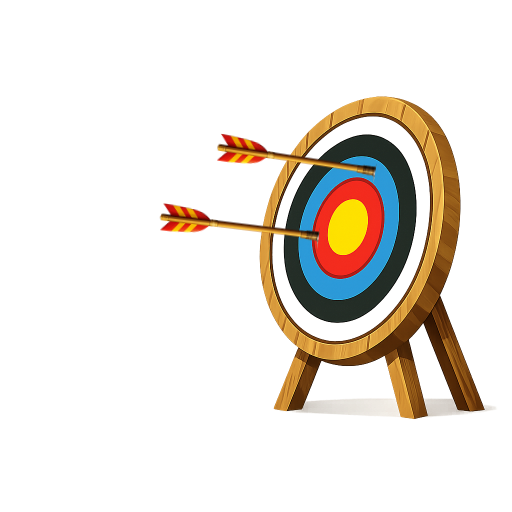
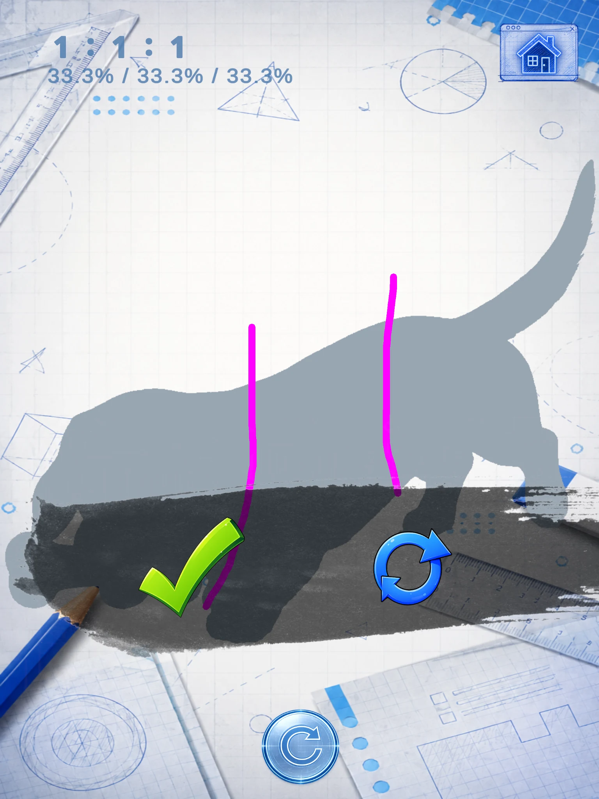
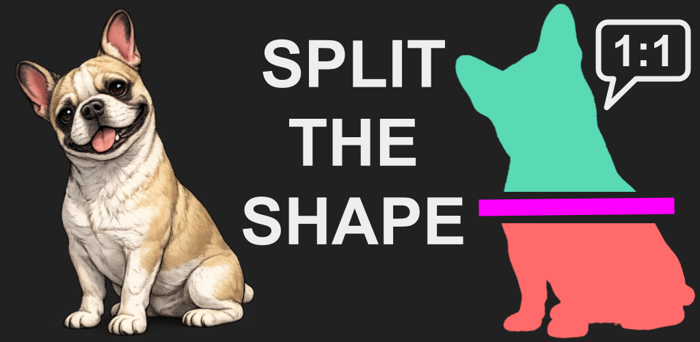

01
選擇主題
從喜歡的主題開始。這裡有狗、貓、魚、鳥、太空、恐龍、樂器、工具、字母和數字等各種主題。

圖形分割益智遊戲
畫出分割線。
配合目標比例。
選擇喜歡的主題，在每個剪影上畫線，讓圖形的分割結果盡可能接近目標比例。
可在 iOS 和 Android 上免費下載。含廣告。

從喜歡的主題開始。這裡有狗、貓、魚、鳥、太空、恐龍、樂器、工具、字母和數字等各種主題。
圖片變成剪影後，畫出一條線，讓圖形的分割結果盡可能接近目標比例。
立即查看結果，看看你的分割有多接近目標比例。如果差距太大，可以再試一次。

一般模式
選擇喜歡的主題，依序完成三個分割挑戰。
首先將剪影分成面積相等的兩部分。

挑戰不同比例的分割，感受每一部分大約應該占多少面積。
將剪影分成面積相等的三部分。可以參考你在階段 2 畫出的分割線。


以「羅賓漢式」一箭正中靶心。

命中目標，繼續前進。

沒有命中？再試一次。

挑戰模式
在一般模式的一個關卡中獲得 2 顆或更多星星，即可解鎖該關卡的挑戰模式。
按照隨機給出的兩部分比例分割剪影。
挑戰隨機給出的三部分比例，看看你能有多接近目標。
沒有固定比例需要記住。
相信你自己的面積感。
挑戰模式採用更深色的視覺風格，並搭配不同的背景音樂。

選擇一個主題，畫出分割線，看看你能有多接近目標比例。



滑動或使用箭頭瀏覽。選擇截圖即可放大查看。
從喜歡的主題開始——動物、太空、恐龍、樂器、工具、字母和數字等，各種主題等你探索。
觀察圖形、判斷面積，看看你能讓分割結果多接近目標比例。
簡單的視覺提示、比例與直覺操作，讓你專注在解謎上。
選擇一個主題，等待圖片變成剪影，然後畫線進行分割，讓結果盡可能接近目標比例。
你可以再試一次，並調整分割方式。
一般模式有三個階段：1:1、6:4 或 7:3，以及 1:1:1。完成全部三個階段，即可獲得 1 至 3 顆星。
在一般模式的一個關卡中獲得 2 顆或更多星星，即可解鎖該關卡的挑戰模式。你可以從遊戲主畫面手動切換模式。
挑戰模式有兩個階段，目標比例都是隨機產生：先進行二分，再進行三分。你可以在這裡考驗自己的面積感。

選擇一個圖形，相信自己的判斷，看看你能有多接近目標比例。
可在 iOS 和 Android 上免費下載。含廣告。